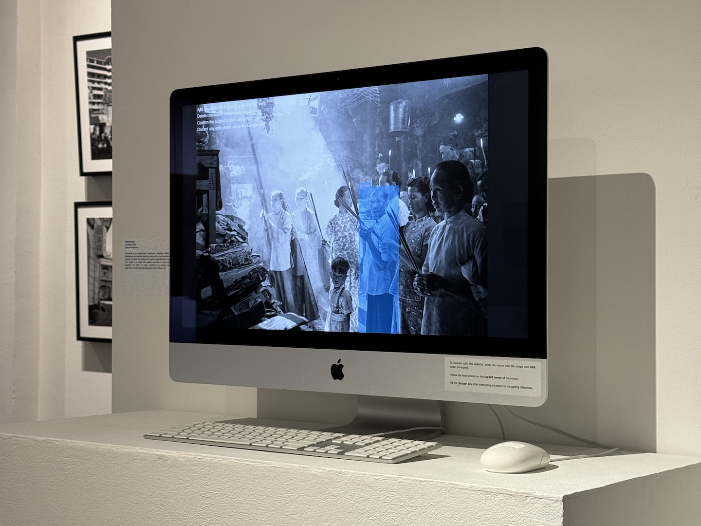
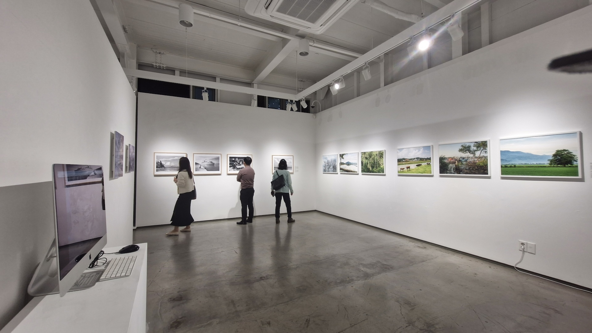

nostAIgia is an interactive installation that presents viewers with the experience of viewing a curated slideshow of photographs from Gibson-Hill’s collection, alongside a computer vision model which detects and names subjects within the image.
This project was exhibited as part of Liminal Landscapes, which relives the street photographic work of C.A. Gibson-Hill depicting life in Singapore and Malaya in the 1940s-60s.
Concept
Conceived as a thought-social experiment, nostAIgia utilises artificial intelligence and machine learning, along with crowd-sourced data from viewers to retrain and calibrate its custom image-detection capabilities. This results in a model that adapts according to every interaction recorded, for better or worse, establishing a neoteric co-creative experience of reliving the photographic work of Gibson-Hill.
This experience presents viewers with the role of an observer and supervisor, as they are allowed to stop the slideshow at any given image and create, edit or delete subject tags. The contributed data will be collated periodically and used as training data for the next iteration of the computer vision model.
As a result, the model has started to pick up on local colloquialism such as “sampan” and identifying objects that look different due to the time period compared to the modern equivalent we (as well as the computer vision model) would be familiar with these days, such as a bowl or a car.
Technical Considerations
The entire project consisted of two main technical components that had to be designed and developed:
- The interactive installation, which served as the front-end allowing visitors to input data.
- The machine learning framework, which required collecting data from the installation and fine-tuning the modified model.
The project runs as a web application, which allows data to be written from the various exhibition locations and sent to the cloud. The YOLOv8 model is used for detecting and segmenting subjects within the image, and is continuously trained on Google Colab which is synced to the Google Drive that houses data collected from interactions with viewers.
Exhibition
Commissioned by Prof. Oh Soon-Hwa, this project is part of Liminal Landscapes which features works that reimagine Gibson-Hill’s photographs in the context of today via the application of various modern technologies.
Liminal Landscapes exhibited in Singapore and Busan, South Korea from March to May 2024:
- Selegie Arts Centre, Singapore
- The Arts House at The Old Parliament, Singapore
- ART SPACE, Busan
Throughout the duration of the exhibition, data collected from visitors interacting with the installation was saved on Google Drive, and then manually sorted and supervised before using them to train the custom YOLOv8 model over time. As a result of this, the model picked up on local colloquialisms and identified new subjects that the base model was not able to label.

